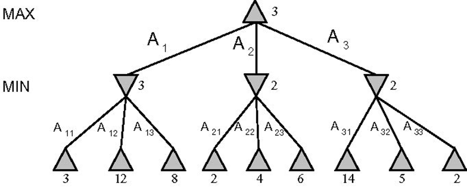
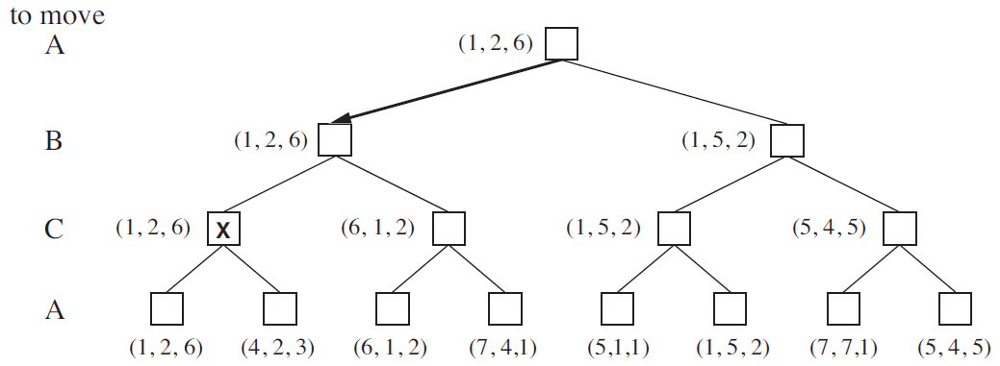
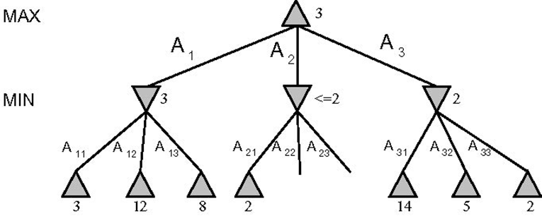
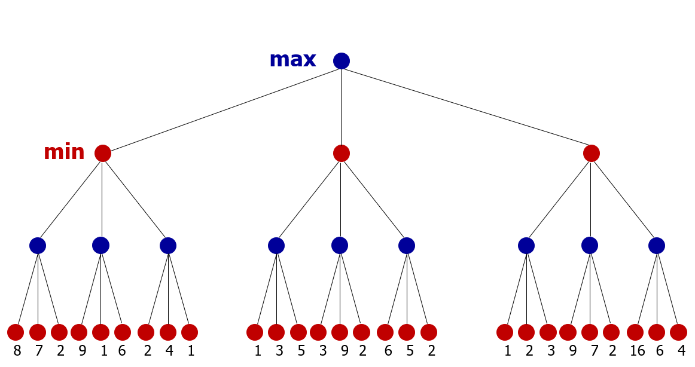
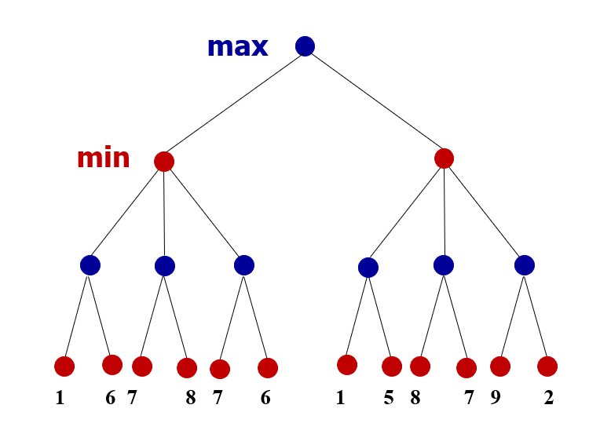
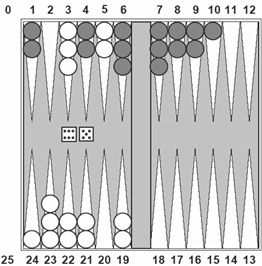

Artificial Intelligence Applied to Games
Game Theory, Search Algorithms, and Advanced Techniques
Gustavo Reis
Collaboration:
- Carlos Grilo
- Catarina Silva
- Pedro Gago
Introduction to AI in Games
Games provide idealized worlds where opponents actively try to diminish the welfare of our agent
The presence of opponents introduces uncertainty into decision-making, as we cannot predict with 100% certainty what they will do
Challenges in Game AI
Game search spaces are typically very large, making complete exploration impossible
Time constraints limit our ability to evaluate all possibilities
These limitations create uncertainty about the consequences of our decisions
Why Study Games in AI?
Games have clear, well-defined rules and boundaries
They offer enormous state spaces, making them ideal for testing search algorithms
Game AI techniques can be transferred to other domains (robotics, planning, optimization)
They provide controlled environments for developing and testing new AI approaches
Key Characteristics of Games
Environmental Access: Complete or partial information about the game state
Contingency: The opponent can disrupt our plans
- An agent may formulate a winning strategy but cannot guarantee its execution
- This often requires developing new plans in response to opponent moves
Additional Game Characteristics
Large State Spaces: Chess has approximately 10^43 legal positions
Time Constraints: Decisions must be made within specific time limits
Randomness: Some games include elements of chance (dice, cards)
Formal Definition of a Game
- Initial State:
- Starting configuration of the game
- Determination of which player moves first
- Actions(state): Returns valid operators in a state or resulting states
- Terminal_Test(state): Returns true if the state is an end game position
- Utility_Function(state): Returns a numeric value for terminal states
Max and Min Players
In two-player games, we refer to the players as Max and Min
Max represents our AI agent (trying to maximize the score)
Min represents the opponent (trying to minimize the score)
The Challenge of Game AI
In standard search problems, Max seeks a sequence of moves leading to victory
In adversarial games, Min actively counters our strategy
Max must find a strategy that leads to victory regardless of Min's actions
Game Tree Representation

Alternating layers represent Max's and Min's turns
The Minimax Algorithm
Minimax determines the optimal strategy by assuming both players play perfectly
It works by analyzing the entire game tree to find the best possible move
The algorithm recursively evaluates positions from the perspective of alternating players
Minimax Characteristics
Principle: Generate the complete game tree and determine the best move for Max
Complexity Analysis:
- Space complexity: $O(b \times m)$
- Time complexity: $O(b^{m})$
Where $b$ = branching factor (number of legal moves) and $m$ = maximum tree depth
Minimax Procedure
- Generate the complete game tree down to terminal nodes
- Apply the utility function to evaluate all terminal positions
- Propagate values upward according to player type:
- Max nodes: Take the maximum value from child nodes
- Min nodes: Take the minimum value from child nodes
- Continue propagation until the root node
- Select the move that leads to the highest value for Max
Minimax Example
Values propagate upward based on player type (Max or Min)
Minimax Implementation
function MINIMAX-DECISION(state) returns an action
max_value = -∞
best_action = null
for each action in ACTIONS(state) do
v = MIN-VALUE(RESULT(state, action))
if v > max_value then
max_value = v
best_action = action
return best_action
function MAX-VALUE(state) returns a utility value
if TERMINAL-TEST(state) then return UTILITY(state)
v = -∞
for each action in ACTIONS(state) do
v = max(v, MIN-VALUE(RESULT(state, action)))
return v
function MIN-VALUE(state) returns a utility value
if TERMINAL-TEST(state) then return UTILITY(state)
v = +∞
for each action in ACTIONS(state) do
v = min(v, MAX-VALUE(RESULT(state, action)))
return v
Minimax in Multi-Player Games
With more than two players, each level of the tree represents a different player's turn
Each player attempts to maximize their own utility value
The Alpha-Beta Pruning Algorithm
Minimax is effective but computationally expensive for real games
For example, in chess (branching factor ≈ 35), examining 150,000 positions allows looking only 3-4 moves ahead
Human chess players can typically plan 7-8 moves ahead
Alpha-Beta pruning dramatically improves efficiency while preserving optimality
Alpha-Beta Pruning Concept
Alpha-Beta computes the same result as Minimax but avoids exploring branches that cannot affect the final decision
It maintains two bounds during the search:
- Alpha (α): Best value found so far for Max (starts at -∞)
- Beta (β): Best value found so far for Min (starts at +∞)
When α ≥ β, we can safely prune (skip) the remaining branches
Alpha-Beta Pruning Illustration
Crossed-out branches are pruned without evaluation
Alpha-Beta Implementation
function ALPHA-BETA-DECISION(state) returns an action
max_value = -∞
best_action = null
for each action in ACTIONS(state) do
v = MIN-VALUE(RESULT(state, action), -∞, +∞)
if v > max_value then
max_value = v
best_action = action
return best_action
function MAX-VALUE(state, α, β) returns a utility value
if TERMINAL-TEST(state) then return UTILITY(state)
v = -∞
for each action in ACTIONS(state) do
v = max(v, MIN-VALUE(RESULT(state, action), α, β))
if v ≥ β then return v
α = max(α, v)
return v
function MIN-VALUE(state, α, β) returns a utility value
if TERMINAL-TEST(state) then return UTILITY(state)
v = +∞
for each action in ACTIONS(state) do
v = min(v, MAX-VALUE(RESULT(state, action), α, β))
if v ≤ α then return v
β = min(β, v)
return v
Optimizing Alpha-Beta Performance
Alpha-Beta's efficiency heavily depends on the order in which moves are examined
Best-case time complexity: $O(b^{\frac{d}{2}})$ with optimal move ordering
Average-case time complexity: $O(b^{\frac{3d}{4}})$ with random move ordering
With optimal ordering, Alpha-Beta can effectively examine trees twice as deep as Minimax
Search Optimization Techniques
- Move Ordering: Examine most promising moves first
- In chess: captures first, then threats, then developing moves
- Use iterative deepening to inform move ordering at deeper levels
- Transposition Tables:
- Hash tables that store previously evaluated positions
- Avoid redundant evaluation of positions reached via different move sequences
- Particularly valuable in games with symmetries or multiple paths to the same state
Practice Exercises
Exercise 1: Apply Minimax
Apply the Minimax algorithm to this game tree to determine the optimal move
Exercise 2: Apply Alpha-Beta Pruning
Apply Alpha-Beta pruning to this tree and identify which branches can be pruned
Practical Limitations and Solutions
Even with Alpha-Beta pruning, searching to terminal nodes is often impossible in complex games
Solution: Limit search depth and apply heuristic evaluation functions to non-terminal nodes
Modifications to Basic Algorithms
- Two key adaptations to Minimax/Alpha-Beta for practical implementation:
- Replace the utility function with a heuristic evaluation function
- Replace terminal test with a depth limit test
Heuristic Evaluation Functions
A heuristic evaluation function estimates the expected utility of a non-terminal position
The quality of this function significantly impacts an AI's performance
Poor evaluation functions can lead the AI into seemingly advantageous but actually disadvantageous positions
Designing Effective Evaluation Functions
Key criteria for high-quality evaluation functions:
- Must match the actual utility function on terminal nodes
- Must be computationally efficient (fast to calculate)
- Must accurately reflect winning probabilities
- Should capture important strategic and tactical elements of the game
Linear Weighted Functions
Many game AI systems use linear weighted functions of the form:
$$w_1 f_1 + w_2 f_2 + \cdots + w_n f_n $$Where:
- $f_i$ represents features/characteristics of the game position
- $w_i$ represents the weight (importance) of each feature
Example: Chess Evaluation
- Common features in chess evaluation:
- $f_1$ = material balance (e.g., number of pawns)
- $f_2$ = piece activity and mobility
- $f_3$ = king safety
- $f_4$ = pawn structure
- Traditional piece values: pawn=1, knight=3, bishop=3, rook=5, queen=9
- Challenge: How to determine optimal weights?
- Expert knowledge, machine learning, self-play
Non-linear Evaluation Functions
Linear functions assume independence between features, which is rarely true in complex games
Examples of feature interactions in chess:
- Two bishops are often worth more than twice one bishop
- A bishop's value increases as the board opens up
- Knight pairs are less valuable than bishop pairs in open positions
Non-linear functions (neural networks, decision trees) can capture these complex relationships
Search Depth Management
Several approaches to managing search depth:
- Fixed depth: Search to a predetermined depth limit
- Time-based: Search as deeply as possible within a time constraint
- Iterative deepening: Progressively increase search depth until time runs out
- Used by most modern chess engines (e.g., Deep Blue)
- Provides good move ordering information for deeper searches
Horizon Effect and Quiescence Search
Problem: A position may appear favorable but lead to disaster just beyond the search depth
Solution - Quiescence Search:
- Apply evaluation function only to "quiet" positions (stable states)
- For unstable positions (e.g., during captures or checks), continue searching beyond the depth limit
- This helps avoid the "horizon effect" where problems are pushed just beyond the search depth
The Horizon Effect Illustrated
Chess example: An AI might postpone an inevitable loss by making pointless moves

Without quiescence search, the AI might not see the impending mate beyond its search depth
Forward Pruning
Unlike Alpha-Beta pruning (which maintains optimality), forward pruning sacrifices optimality for efficiency
It involves selectively ignoring certain branches deemed unlikely to be optimal
Common approaches:
- Beam search: Examine only the N most promising moves at each level
- Null-move pruning: Skip a player's turn to quickly identify strong positions
- Futility pruning: Ignore moves unlikely to improve the position
Risk: May inadvertently prune the optimal move
Games with Randomness
Stochastic games include elements of chance (dice, cards, etc.)
Search trees must incorporate chance nodes in addition to Max and Min nodes
Expectiminimax algorithm handles randomness by calculating expected values
Expectiminimax Algorithm
Extends Minimax to handle stochastic games by adding chance nodes:
- If Terminal-Test(state) = true, return Utility(state)
- If Player(state) = Max, return maximum of successors' values
- If Player(state) = Min, return minimum of successors' values
- If Player(state) = Chance, return weighted average of successors' values
Expectiminimax Example

Circular nodes represent chance events with their probabilities
Importance of Absolute Values

In games with chance, the magnitude of evaluation values matters, not just their relative ordering
- The behavior is preserved only for positive linear transformations of the evaluation function
- Values must be proportional to the expected utility
- Risk assessment becomes important in decision-making
Complexity in Stochastic Games
Randomness significantly increases the branching factor:
- Backgammon example:
- 21 possible dice roll combinations
- Approximately 20 possible moves per position
- For a 4-ply search: $20 \times (21 \times 20)^{2} = 1.2 \times 10^{9}$ nodes
Practical Approaches
- The advantage of looking ahead diminishes more quickly in stochastic games
- Alpha-beta pruning is less effective due to the chance nodes
- TD-Gammon example:
- Searches only 2-3 plies ahead
- Uses a sophisticated neural network evaluation function
- Trained through temporal difference learning
- Plays at world champion level despite shallow search
Games with Imperfect Information
In games like poker, bridge, or Stratego, players lack complete information about the game state
Approaches to handling imperfect information:
- Probabilistic models: Calculate probabilities of different hidden states
- Determinization: Sample possible game states and analyze each one
- Information set search: Search over sets of indistinguishable states
- Opponent modeling: Infer information from opponent behavior
These games often involve psychological elements (bluffing, deception)
Real-World Applications of Game AI
Dana S. Nau: "AI games techniques: are they useful for anything other than games?"
Alpha-beta search research established the foundation for AI theories of heuristic search, applicable in many domains
Knowledge Transfer from Games
Schaeffer's CHINOOK (checkers) research led to parallel algorithms for information storage and retrieval now used in DNA sequencing
Tesauro's TD-Gammon inspired reinforcement learning applications in:
- NASA space shuttle job-shop scheduling
- Elevator dispatch control systems
- Cellular network channel assignment
- Manufacturing optimization
Modern AI Game Advances
Recent breakthroughs continue to advance AI techniques:
- DeepMind's AlphaGo/AlphaZero: Deep reinforcement learning + Monte Carlo Tree Search
- OpenAI Five (Dota 2): Multi-agent reinforcement learning
- Pluribus (Poker): Counterfactual regret minimization
These advances are being applied to protein folding, drug discovery, robotics, and more
References and Further Reading
- Russell, S. & Norvig, P. "Artificial Intelligence: A Modern Approach"
- Millington, I. & Funge, J. "Artificial Intelligence for Games"
- Silver, D. et al. "Mastering Chess and Shogi by Self-Play with a General Reinforcement Learning Algorithm"
- Schaeffer, J. et al. "Checkers Is Solved"
- Tesauro, G. "Temporal Difference Learning and TD-Gammon"
Summary
- Games provide idealized environments for developing and testing AI algorithms
- Key algorithms include Minimax, Alpha-Beta pruning, and Expectiminimax
- Practical implementations rely on heuristic evaluation functions and search depth limits
- Advanced techniques handle special cases like quiescence search and transposition tables
- Game AI techniques have diverse applications beyond gaming
The field continues to advance with machine learning and neural network approaches
Questions?
Thank you for your attention